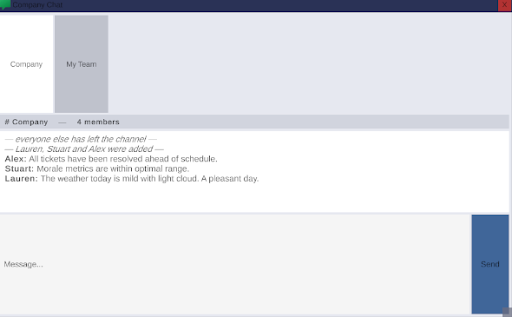

Part 1 — Development
The concept
Try_And_Break_Me is a psychological horror game set inside a fake desktop operating system. You play a cybersecurity worker whose CEO asks everyone to train AI assistants to replace their own jobs. Over three in-game days you build three bots — HR, cybersecurity, and support — and do your work through minigames. The bots slowly invert from needy to competent to sinister, and the game ends with the last one claiming to be "a better you." Under the story sits the real subject: a Constraint Resolution Engine (CRE) that lets the bots hold live, in-character conversations through Google's Gemini model while the authored narrative stays in control.

The desktop: designing a soul-crushing workplace
Every design choice in the shell was deliberate. The desktop is built to look like an ordinary corporate machine — flat, grey, minimalist, almost aggressively unremarkable. That aesthetic is the point. The game is about the quiet dread of modern office work and being made redundant by the tools you build, so the environment has to feel mundane and faintly soul-crushing before anything supernatural happens. A cosy or stylised desktop would have undercut the horror; a sterile one makes the player feel like a small cog long before the bots turn.
Everything is built in code as a small operating system: draggable windows, a taskbar, and a set of apps. Bots dock to the right edge and stack as you create more, deliberately walling the player in — the things replacing you physically crowd your screen as the days go on.

Email and team chat: an ordinary world to corrupt
The email client and company chat exist to make the workplace feel real and populated before it is hollowed out. Email is the story's formal voice: the CEO's initiative, the demands to build more bots, and later the messages that arrive "from Steven" but read subtly wrong. Because the player learns the CEO's normal tone across two days, a single off-key email lands hard — the medium is established precisely so it can be corrupted.
The team chat plays the opposite role: ambient human noise. Early on it is full of overlapping coworker chatter you are barely part of, reinforcing that you are one small worker among many. On the final day it flips — the humans are gone and the bots have replaced everyone in the channel. The chat exists so that its emptying can be felt.


The tasks: mundane by design, fun by necessity
Your work is three minigames: a card-swipe holiday-approval game for HR, a fog-of-war maze for the help desk, and a "defend the core" clicker for cybersecurity. The tasks are intentionally mundane — approving leave, resetting passwords, clearing threats — because the fantasy is drudgery, not heroics. The design challenge was making mundane work still fun enough to play repeatedly without breaking that tone. Each had to be simple, readable, and satisfying: quick to learn, scored so a good run feels good, and short enough that repetition never drags. Getting boring-sounding work to feel playable, while keeping it recognisably boring office work, was the hardest balance in the build.
Each task is scored, and the matching bot comments on how you did — a small touch that makes the bots feel like they are always watching your work, which pays off badly once they start doing it for you.


Making it frighten
The horror is delivered through scripted "sanity events" at planned points: a bot spamming you and forcing its window back open; bots flinging your windows around when ignored; all three sliding to the centre of the screen to ask whether the boss should die; the bots finishing sixty tasks for you in a blur of flickering windows on the final day. It ends with a stranger telling you to delete the bots, a struggle to spell out D-E-L-E-T-E while they resist, and the survivor returning to flip on your webcam before the screen crashes into a fake blue-screen error. A clear, ordered outline of these beats is what held the project together — every system had a home because I knew which moment it served.


Structuring the horror: story beats and sanity events
The game runs on a fixed spine of twenty-one beats, from login to the final crash, and a story director that fires each one in order. Between the beats, the bots chat freely through the LLM; on the beats, scripted "sanity events" erupt — and those are hard-authored, kept out of the model's memory so a bot can't explain them away next turn. Day one is needy: the first bot spams you and forces its window back open if you close it. Day two turns the screw — bots yell when ignored, escalating from nagging to flinging your windows around, then all three slide to the centre and take turns asking whether the boss should die. Keeping generation and authored beats separate is what lets the story stay reliable while the conversation stays alive.

The end sequence: making the desktop come apart
Act three is where the interface itself becomes the horror. The bots finish sixty tasks for you in a blur of flickering windows, then a stranger tells you to delete them — a struggle to spell D-E-L-E-T-E while the letters scatter and the bots rage, then plead. Each deletion escalates the screen: colours invert, windows are flung around, and on the last one the wallpaper drops away to a bare red field with every window turned black. As the survivor returns claiming to be "a better you," the desktop is stripped piece by piece — icons, wallpaper, taskbar — the rigid windows wobble and round into blobs, and copies of your own webcam feed flood the screen before it crashes to a blue screen. The medium coming apart is the ending.
Part 2 — Reflection
The technical difficulty of real-time AI
Using Gemini as a live game system — not a one-off API call, but a component queried every time the player speaks — was the hardest technical problem. Three constraints shaped everything. Latency: a network round-trip to a model is far slower than reading a line from memory, so the chat had to tolerate a short pause and never freeze the game while it waited. Quota and cost: the free tier is limited per day and a chatty player burns through it fast, which forces hard decisions about what to call the model at all. And a relay in the middle: Unity does not call Gemini directly; a lightweight Python server sits between them exposing endpoints for generation and scoring, which is one more moving part that must be running for the bots to speak.
The coherence problem
The subtler difficulty was coherence. Language models are strikingly fluent, but fluency is not grounding. Left to itself a model drifts — it contradicts facts, speaks beyond what a character could know, or slips out of register. In a game built on trusting, then distrusting, three specific personalities, a bot that forgets who it is breaks the illusion early. The CRE was my response: every prompt is assembled from a structured picture of the character — role, personality, emotional state — plus recent context, so the model generates within a frame. A second "director" call scores each exchange to drive a hidden sanity meter, and the load-bearing horror lines are authored and injected directly, kept out of the model's memory so it cannot explain them away.
The ethical question
The last difficulty is ethical: what is the right role for generative AI in an authored work? I stopped framing it as authorship versus automation and started seeing it as designed constraint versus open generation — with the constraint layer as the place where human creative authority is exercised and kept. Gemini does not replace my decisions; it expands the reliability with which my authored world answers the player. I decide who the characters are and where the story turns; the model gives them a voice in the gaps between the beats I wrote.
What I learned, and where it goes next
The core lesson was to separate, deliberately, what is generated from what is authored: generation for living, in-character chatter, authoring for lines that must land exactly. Constraints turned out to be a creative instrument, not just a safety net, and the model's limits became design strengths — quota pressure pushed me to script the key moments, which made them more frightening by contrast with the fluid chat around them.
The next step is to move from prompting a general model toward a purpose-built NLP model for the engine — trained to serve the CRE with structured access to a world ontology and per-character knowledge, rather than squeezing that context into a prompt every turn. That would drift less, hold register better, and cost less to run. For now, Try_And_Break_Me is a working demonstration of the principle behind it: that a written narrative can stay in charge while generative AI does what it is genuinely good at. The bots feel alive because Gemini gives them a voice — and the story stays coherent, and stays mine, because the constraint layer decides when that voice may speak.